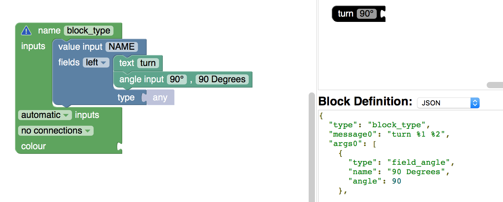
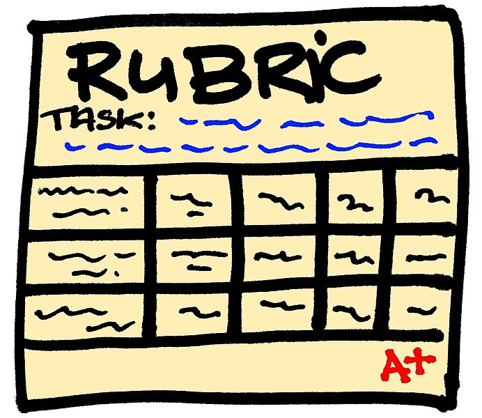
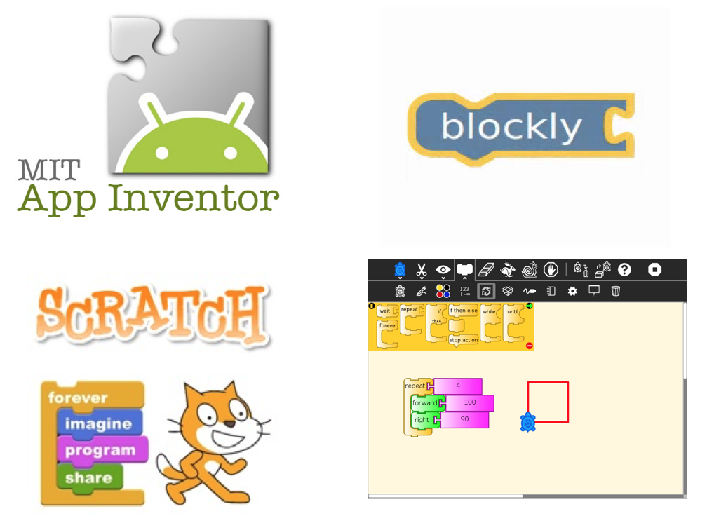
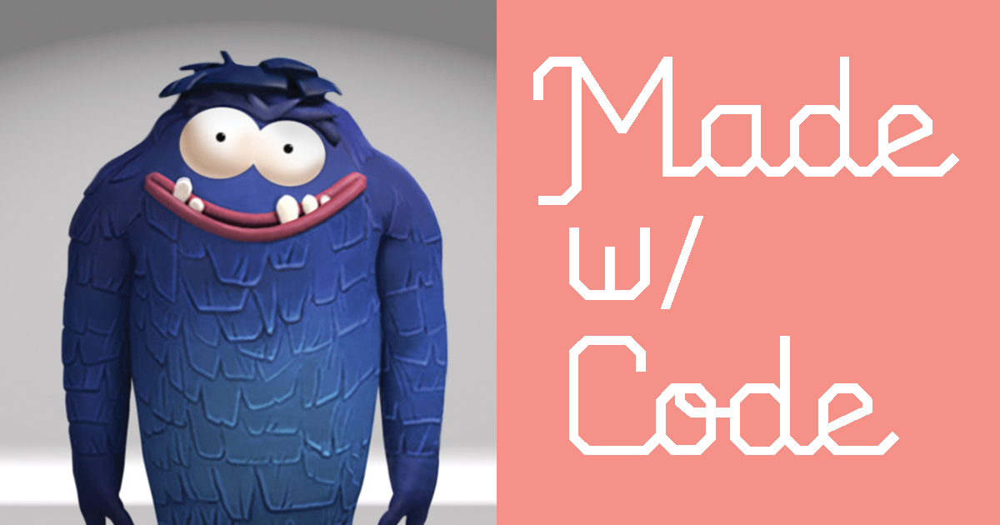

Erica Pantoja
Kennesaw State University
" Hopper's Fables "
CREU_Reseach_2016-2017
Terminology!
(Dec 1 - Dec 9)
During this week, I am documenting the words used in Snap and Frozen. Terminology is a very important factor in any programming language specially...
Read MoreStart coding on Blockly!
(Nov 25 - Dec 2)
We finally started coding. My task during this week was to code the blog "turn". Turn left and right.
 Read MoreACM Mid-Southeast Conference!
Oct9-Oct23
Rubric
| Feature | 1 Point (poor) | 2 Points(good) | 3 Points (Excellent) |
|---|---|---|---|
| Feedback and designer/learner models |
|
|
|
| Appropriate Symbolism |
|
|
|
| Learn by Mistakes after mastering basic skills |
|
|
|
Resources
- A Programming Environment for Visual Block-Based Domain-Specific Languages
- Exploring students' computational practice, design and performance of problem-solving through a visual programming environment
- Teaching Practical Software Engineering and Global Software Engineering: Evaluation and Comparison
- Education Beyond Blocks: Syntax and Semantics
Hopper's Fables: Rubric (close to the final product)
id = "date" (Oct 03- Oct 11)
This week we are working on finalizing our rubric and work on our proposal.
Read MoreHopper's Fables: Rubric
(Sep 26 - Oct 03)
This week we are going to focus in elaborate our rubric and the storylines of out language
 Read MoreKeep doing reseach about existing block languages
(Sep 19 - Sept 26)
During this week we are continuing doing research about other block programming languages and their evaluation in education. I found out very interesting artilces that evaluate Scratch and App Inventor on programming skills, but have not found an exisiting block programming language that foucus on math and reading skills. This is why our language will be unique and most sucessful. Through out our storylines, kids will not only gain programming skills but also math and reading skills. Read More
Brainstorming- Characteristics of our language
(Sep 12 - Sept 19)
During this week I am doing more reseach about existing block programming languages, especially on those that according professionals are best block programming languages in education. Among those languages are Scracth, Scratch Jr. App Inventor, Lego, and Alice. Our task is do research about the evaluation of those top block programming languages so we can start elaborating the reubric of our block programming language. What wil make our language unique? What characteristics it must to have? What would be nice to have?
 Read MoreReseach About Existing Block Programming Languages
(Sept 3 - Sept 12)
My task during this week is to do reseach about existing block programming languages, read the article Predicting Quality in Educational Software: Evaluating for Learning, Usability and the Synergy between them by David Squires and Jenny Preece, and get familiarized with Scratch and Blockly.
 Read More